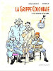
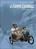
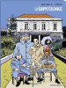
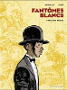
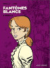

Dyptique historique relattant l'après première guerre mondiale et l'arrivée de la grippe espagnole sur l'île. Cette BD primée Angoulěme a fait l'objet d'un article dédié.

La grippe coloniale , Tome 1
Bande dessinée | cartonné | Vents D'ouest | octobre 2003
{% fnac "grippe1", "https://livre.fnac.com/a1446960/La-grippe-coloniale-Le-retour-d-Ulysse-Tome-01-La-Grippe-Coloniale-Appollo" %}

La grippe coloniale , Tome 2
Bande dessinée | cartonné | Vents D'ouest | juin 2012
{% fnac "grippe2", "https://livre.fnac.com/a4035101/La-grippe-coloniale-Cyclone-la-Peste-Tome-02-La-Grippe-Coloniale-Appollo" %}

La grippe coloniale , Tome 1 et 2
Bande dessinée | coffret | Vents D'ouest | novembre 2013
{% fnac "grippe12", "https://livre.fnac.com/a6154665/La-grippe-coloniale-Tome-1-et-Tome-2-La-Grippe-Coloniale-Coffret-Tomes-01-et-02-Appollo" %}
Cette histoire en deux tomes peint la Réunion de la fin du XIXème siècle ou les progrěs sociologiques et technologiques s'entremèlent avec les souvenirs et l'histoire des ancètres et leurs espris (les fantômes blancs). Une histoire par l'auteur de la grippe coloniale, avec un autre ami dessinateur qui met en valeur les traits captivants de la Réunion comme les trésors pirates et les relans amers de l'esclavage.

Les fantômes blancs , Tome 1
Bande dessinée | cartonné | Vents D'ouest | août 2005
{% fnac "fantomes1", "https://livre.fnac.com/a1679562/Fantomes-blancs-Maison-Rouge-Tome-01-Fantomes-Blancs-Appollo" %}

Les fantômes blancs , Tome 2
Bande dessinée | cartonné | Vents D'ouest | octobre 2006
{% fnac "fantomes2", "https://livre.fnac.com/a1848006/Fantomes-blancs-Benedicte-Tome-02-Fantomes-Blancs-Appollo" %}